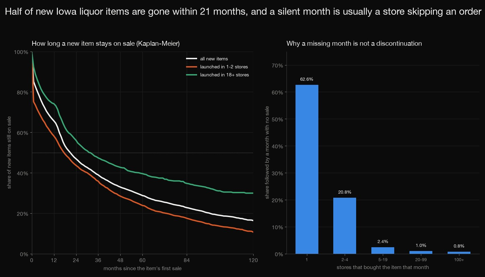
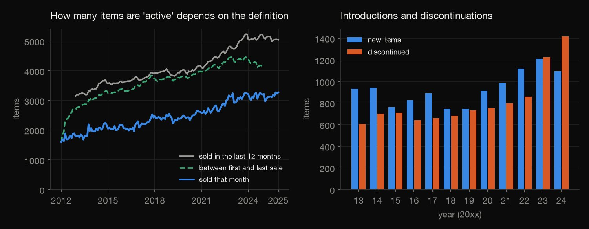
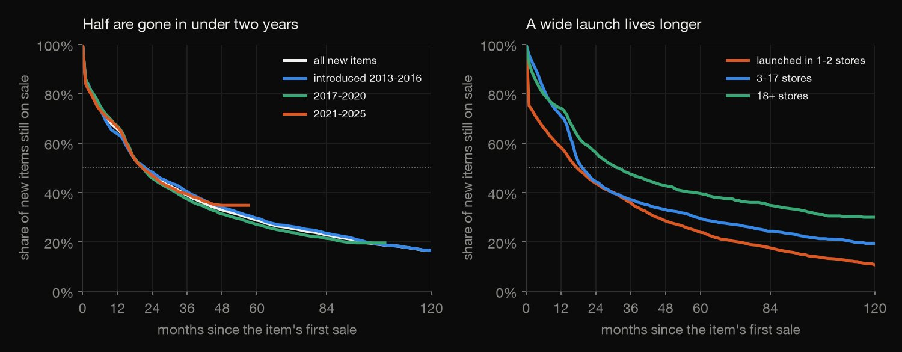
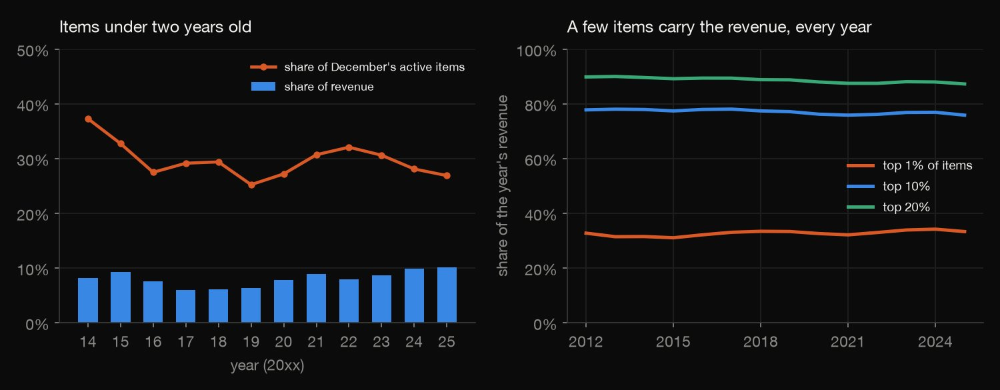
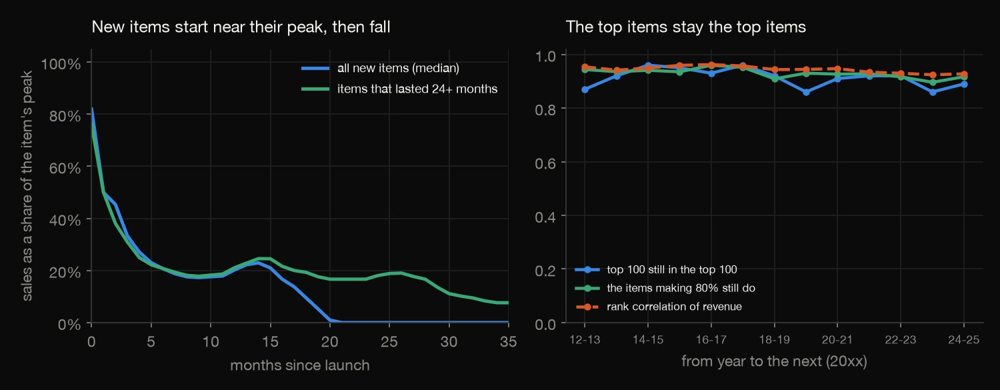
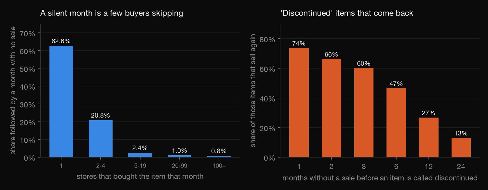

Python · Product analytics · 2026-10
How Long Does a New Iowa Liquor Item Last?
Half of the 12,185 new Iowa liquor items are gone within 21 months and 39% last three years; launched in 18+ stores the median is 32 months, in 1-2 stores 18 months. Items under two years old are 6%-10% of revenue, and a month with no sale mostly means a store skipped an order.

Items are item numbers in the state's sales to stores (Class E, off-premises licensees), not shoppers' purchases; a repackaged product gets a new number. The data starts in January 2012, so earlier items are left out of introductions and survival, and discontinuation needs 12 silent months, so none is recorded for 2025 (items are censored). Survival depends on that gap rule. The ramp study covers survivors only. Source: Iowa Liquor Sales, State of Iowa, Alcohol Operations Bureau, via the Iowa Data Hub (data.iowa.gov), licence CC BY 4.0 as stated in the dataset metadata.
01 — The problem
A product list is a living thing: items arrive, sell and leave, and counting which are "active" is harder than it looks. How long does a new Iowa liquor item stay on sale, how much of the revenue is in new items, and how does a new item's sales ramp up?
The task follows GeeksforGeeks' "Active Product Sales Analysis". The data is the State of Iowa's open record of every spirits purchase by its off-premises liquor licensees since 2012 (15,330 items, 33.3 million invoice lines), where an item that is missing in a month may just be a store that did not order.
02 — What I built
An item's life, counted without fooling yourself:
- The definitions: active, new (no sale in the 12 months before) and discontinued (none in the 12 months after), so that the 2012 start and the 2025 end do not distort anything.
- Survival: a Kaplan-Meier estimate by hand, with the items still on sale censored, by launch breadth, period and family.
- Revenue: the share from items under two years old, and Pareto concentration with its year-to-year stability.
- The ramp: months from launch to half of the peak.
- Check:
check.pyrecounts 239,207 numbers in plain Python, rereading two of the years from the raw files.
03 — How it was built
- 01
Reuse the downloaded files
The sister project downloaded the 14 yearly files from the Iowa Data Hub (9.4 GB, never committed, checksums kept); this one reuses its aggregates, and
download.pyandaggregate.pyare the same scripts.URL = "https://idh-be.iowa.gov/api/v1/datasets/{id}/rows.{ext}" - 02
Remove repeated rows, aggregate by item and month
From 2020 the files repeat many rows exactly, so repeated whole rows are removed (never by invoice id, which from 2025 covers several lines). Then DuckDB keeps, per item and month, the dollars, bottles, lines and the number of distinct stores that bought it.
con.execute("CREATE OR REPLACE TABLE raw AS SELECT DISTINCT * FROM raw") # the export repeats whole rows in some years (see year_audit.csv) - 03
Define discontinued, and censor the rest
An item is discontinued only if its 12 following months are all inside the data and silent; an item last sold later is right-censored at December 2025. Items sold in January 2012 or first sold during 2012 have unknown introduction dates and are left out of the new items.
disc = {i: last[i] <= NM - 1 - G for i in act} - 04
Kaplan-Meier by hand
At each lifetime in months, survival is multiplied by one minus the items that ended then over the items still being followed; Greenwood's formula gives the standard error. Run with gap rules of 6, 12 and 24 months to show how much the answer rests on the definition.
s *= 1 - d_ / n - 05
Recount it without the libraries
check.pyrereads 2012 and 2025 from the raw files, then rebuilds every number from the item-month file with loops and dense arrays instead of dictionaries and sets: 239,207 numbers, including every survival, Pareto share, ramp statistic and silent-run count.S *= (at_risk - d) / at_risk
04 — Results
How many items are on sale depends on what you count. 1,594 items were bought in January 2012 and 3,271 in December 2025, but 5,046 in the twelve months to December 2025, because 7,938 of 15,330 items have at least one silent month between their first and last sale. The table counts new items (no sale in the 12 months before the first) and discontinued ones (none in the 12 months after the last) per year, with the share of revenue from items under two years old; introductions outnumbered discontinuations until 2022, were level in 2023 and fell behind in 2024.
| Year | New | Gone | Young revenue |
|---|---|---|---|
| 2014 | 941 | 704 | 8.1% |
| 2015 | 761 | 709 | 9.2% |
| 2016 | 826 | 642 | 7.5% |
| 2017 | 890 | 659 | 5.9% |
| 2018 | 747 | 682 | 6.1% |
| 2019 | 748 | 733 | 6.4% |
| 2020 | 914 | 753 | 7.8% |
| 2021 | 986 | 796 | 8.8% |
| 2022 | 1,120 | 859 | 7.9% |
| 2023 | 1,209 | 1,224 | 8.7% |
| 2024 | 1,095 | 1,417 | 9.8% |

Half of new items are gone within 21 months. A Kaplan-Meier estimate on the 12,185 items first sold in 2013 or later, counting the 4,037 still on sale as censored: 66% are still on sale after a year, 39% after three and 29% after five. The median lifetime of only the discontinued items is 12 months, which understates it. The three introduction periods look alike; what matters is the launch: items bought by 18 or more stores in their first month last a median of 32 months, those bought by 1 or 2 stores 18. Among the five largest families, tequila (33 months) and liqueurs (29) last longest, vodka (19) shortest.
| Items | 1 year | 3 years | Median |
|---|---|---|---|
| All new items | 66% | 39% | 21 mo |
| Launch: 1-2 | 58% | 36% | 18 mo |
| Launch: 3-17 | 71% | 37% | 20 mo |
| Launch: 18+ | 74% | 47% | 32 mo |
| Tequila | 72% | 48% | 33 mo |
| Liqueur | 74% | 45% | 29 mo |
| Rum | 69% | 40% | 24 mo |
| Whiskey | 64% | 40% | 22 mo |
| Vodka | 67% | 34% | 19 mo |

New items are a small part of revenue, and the top stays the top. Items in their first two years bring in 5.9% to 10.1% of each year's dollars (2014 to 2025), though they are 25% to 37% of the items active each December. The top 1 percent of items bring in 31% to 34% of a year's dollars and the top 10 percent 76% to 78%; 641 items (12.7%) make 80 percent in 2025 against 354 (11.3%) in 2012, and the Gini coefficient stays between 0.84 and 0.86.

New items do not ramp up; they start high and fall. Of 5,880 new items that lasted a year, 65% are at half of their peak in the launch month and 83% within three months (the table); 74% peak within a year. The 2,049 slow starters take a median of 3 months. The median item is at 50% of its peak after one month, which may be stores stocking up at launch (not tested). Meanwhile the leaders hold: 86% to 96% of one year's top 100 are in the next year's.
| Months to half of peak | Items |
|---|---|
| 0 | 65% |
| 1 | 14% |
| 2 | 4% |
| 3-5 | 5% |
| 6-11 | 5% |
| 12-35 | 7% |

A month without a sale is usually a store not ordering. After a month in which one store bought an item, 63% of the time nobody buys it the next month; with 20 to 99 stores it is 1.0%. So the gap rule decides the answer: declaring an item discontinued after one silent month would be wrong for 74% of them, after six months for 47% and after twelve for 27% (at least: an item can return after the data ends). In the table, Silence is the rule, 3 years the share still on sale then, Median the lifetime in months and Return the share of the items so declared that sell again: the survival estimate moves with the rule. A new item number is also not always a new product: 6.2% of new items carry the description of an item that stopped within six months.
| Silence | 3 years | Median | Return |
|---|---|---|---|
| 6 mo | 35% | 19 mo | 47% |
| 12 mo | 39% | 21 mo | 27% |
| 24 mo | 47% | 32 mo | 13% |

05 — What I'd do next
- Link item numbers that are the same product (same brand and size, new packaging) to measure true product lifetimes.
- Add the store side: which stores adopt a new item first, and whether early adopters predict survival.
- Use price and category share to ask why discontinuations outran introductions in 2023 and 2024.